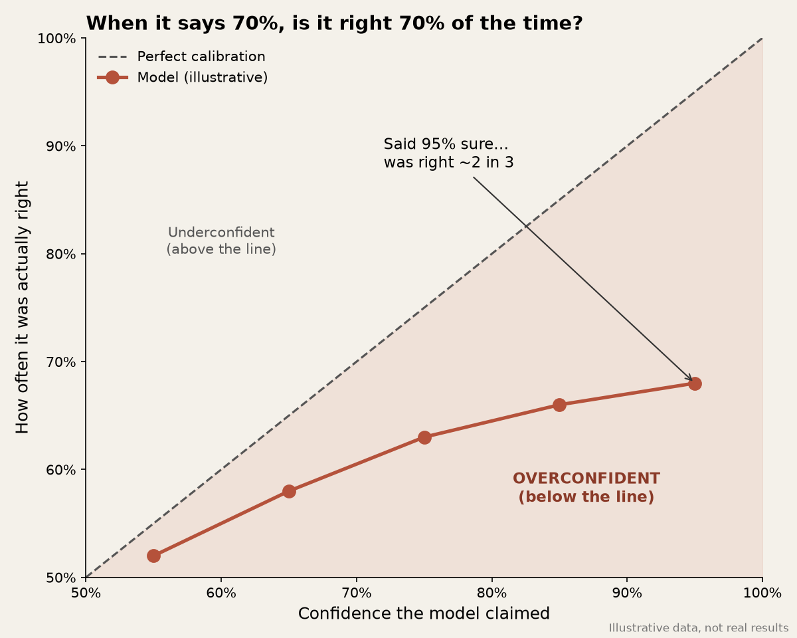

When It Says 70%…
A model, a forecast or a chatbot tells you it’s 70% sure. The useful question isn’t whether 70% sounds high. It’s whether, when it says 70%, the thing actually happens about seven times out of ten.
That’s calibration. It sounds technical, but the habit isn’t.

Accuracy and ranking answer a different question: can this model put the more likely cases above the less likely ones? Plenty of models are good at that and still badly calibrated. They might say 90% when the real rate is closer to 60%, or sit on 70% when the event almost always happens. If you only check whether it picked the right label, you’ll miss that. If you then use the number to set a threshold, book a reserve or fire off an automatic yes, the miss starts to matter.
The weather version
If a forecast says there’s a 70% chance of rain, you don’t judge it on one Tuesday. You look at all the days it called 70%. If it rained on nearly every one of them, the number was too shy. If it almost never rained, the forecast was talking itself up. The label was confident, but the scoreboard wasn’t.
The NBA version
I think about the same check in my NoFlightZone Spurs work. A win probability, or a score saying a lineup should work, is only a decision tool if the probabilities mean what they claim. If a matchup keeps printing 70% and the nights look more like a coin flip, you end up trusting the number more than the game.
Where it shows up in AI work
Large language models are fluent at sounding sure, but “I’m fairly confident” is not a calibrated probability. So collect those statements, log them next to whether the answer was correct, and review them later, the same way you would for any other model. Better still, check the work itself. Did it retrieve the right source? Does the answer tie out? A confident tone is not evidence.
The accounting version
From my finance days, this is a cousin of a provision, a forecast in a board pack, or a “likely to collect” figure. The number can look tidy to one decimal place and still be a guess wearing a suit. The test is the same: when we called something likely, how often did it actually come through?
What I actually do now
- Store the predicted probability and the outcome together. Without the log, there’s nothing to check.
- Bucket similar probabilities and compare the stated rate with the observed rate. The proper name for this is a reliability diagram, but you can start with one bucket: everything that was called “about 70%”.
- Keep ranking and acting separate. A model that’s useful for ordering cases can still be dangerous if you take the raw 70% and use it to auto-approve, auto-decline or book a number.
- Treat an LLM’s verbal confidence as tone, not a number, until you’ve measured it.
- Wait until a bucket has enough cases to mean something. A handful of 70% calls is a small sample, not a verdict.
None of this needs a new platform. It needs the humility to treat a confident number as a claim, then go and check the claim.
Confidence is easy to print. Calibration is what makes the number honest.